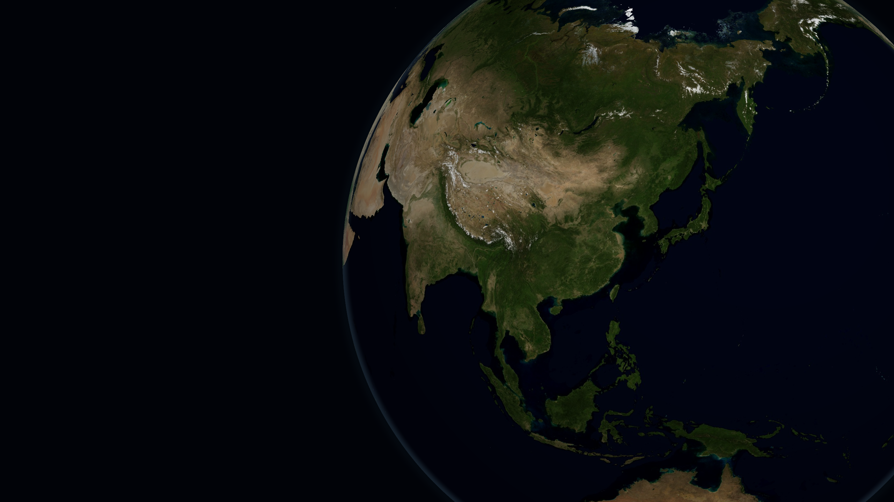
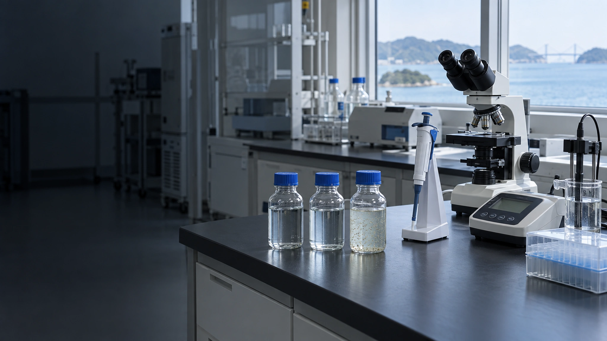
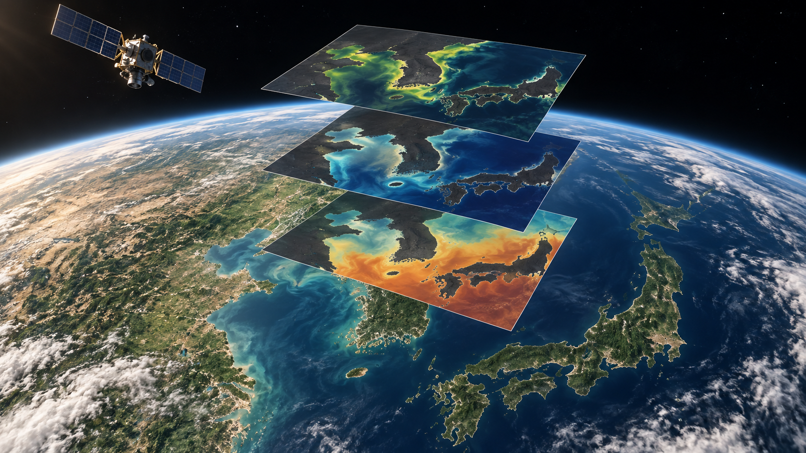
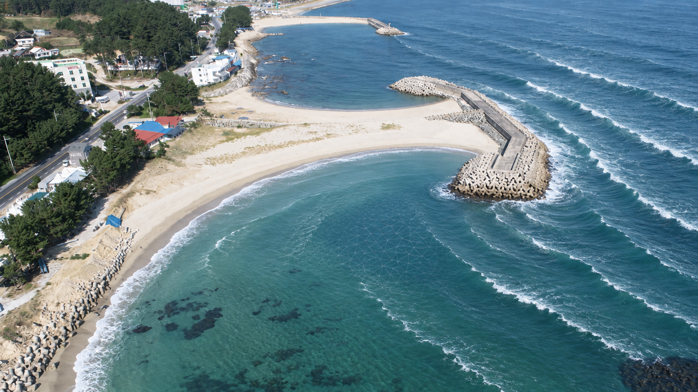
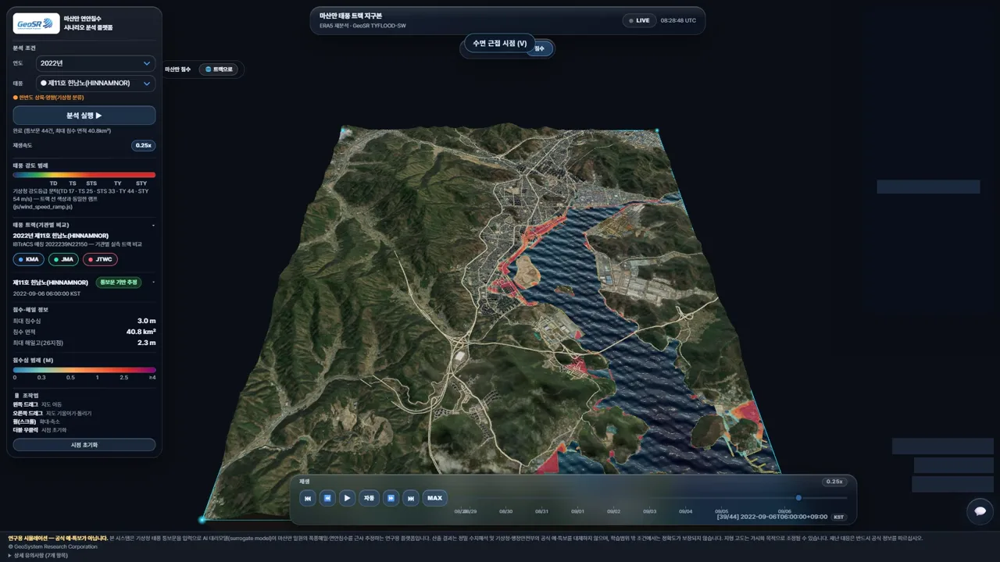
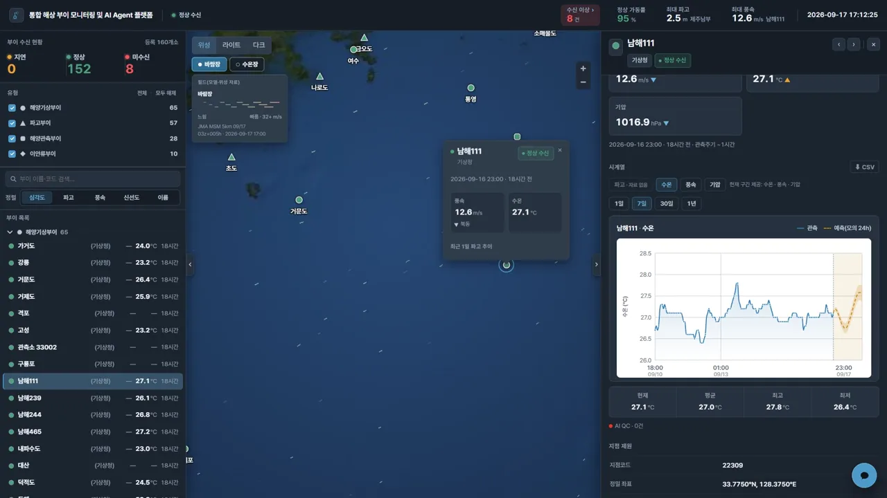
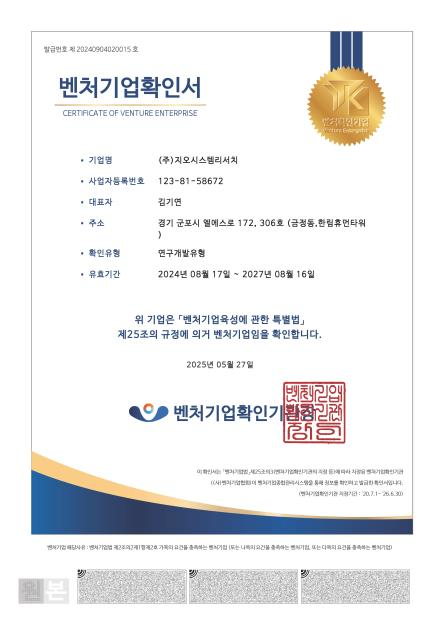
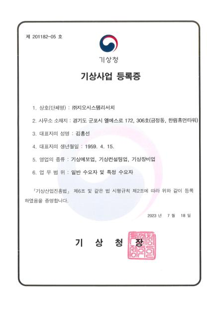
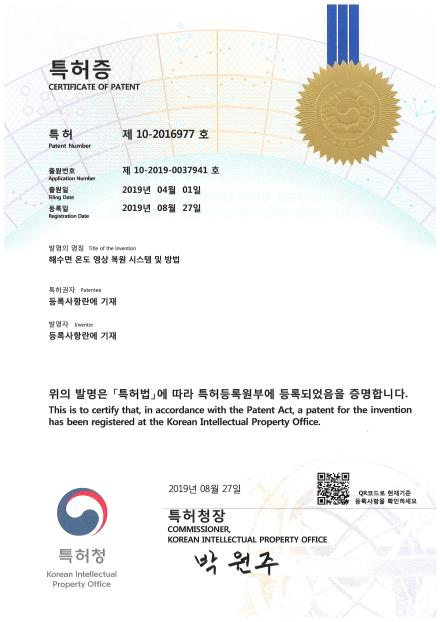
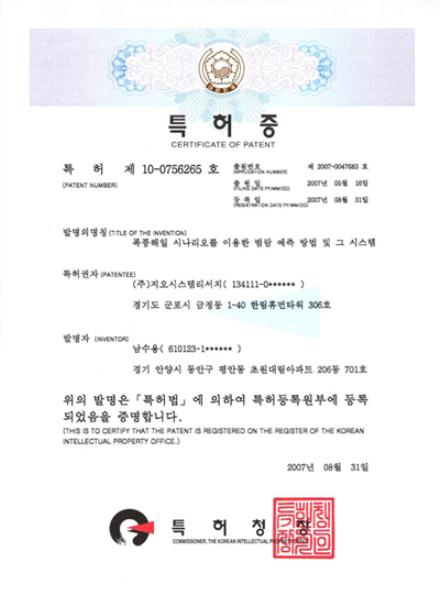

관측에서 예측까지
현장에서 관측하고, 데이터로 변화를 읽습니다.
메인 필름 제작 준비 중
아래로 이어집니다
관측에서 결정까지
관측을 바탕으로 변화를 이해합니다
공간 자료와 환경 정보를 해석해 변화에 대비할 정보로 연결합니다.



탐지 · 예측 · 모니터링
AX Platform
위성 기반 탐지, 침수 예측, 해양부이 모니터링을 위한 각 플랫폼 화면을 살펴봅니다.
플랫폼 화면정적 캡처
DISCOVER · 탐지
위성 기반 시설물 탐지
위성 영상과 관측 정보를 살펴보는 플랫폼 화면입니다.

PREDICT · 예측
Flood 3D
침수 예측 정보를 입체 공간에서 살펴보는 별도 플랫폼입니다.

MONITOR · 모니터링
Ocean Buoy
해양 부이 정보와 관측 상태를 확인하는 플랫폼 화면입니다.

화면은 제품 소개용 정적 캡처입니다.
AX 플랫폼 소개
인증 · 면허·등록 · 지식재산
기술을 뒷받침하는 기록
GeoSR의 주요 인증과 등록, 지식재산 자료를 확인할 수 있습니다.
인증

품질경영시스템(ISO 9001)

벤처기업 확인서
면허·등록

해양조사정보업 등록증 (수로측량)

기상사업 등록증
지식재산권

딥러닝을 이용한 수온시계열 예측자료의 미래시점 자료동화를 통한 해양예측 시스템

해수면 온도 영상 복원 시스템 및 방법

폭풍해일 시나리오를 이용한 범람 예측 방법 및 그 시스템
연구와 회사 소식
GeoSR의 새로운 소식을 확인하세요
최근 연구 성과와 회사 소식은 소식 페이지에서 확인할 수 있습니다.
소식 페이지로 이동GeoSR · 2000년 설립
해양과 환경의 현장에서 기술을 연결합니다
GeoSR은 해양·하구·하천을 포함한 환경 분야에서 조사와 분석, 모델링을 수행합니다.